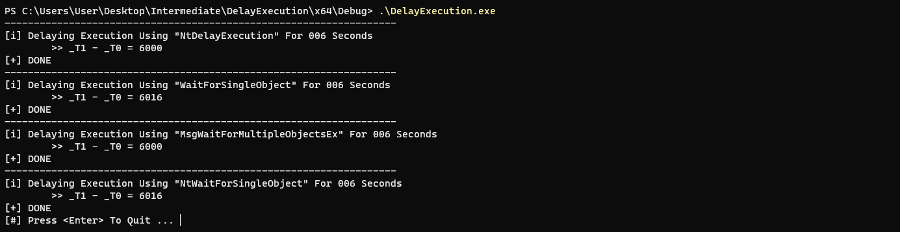

Introduction
Delay execution is a common technique utilized to bypass sandboxed environments. Sandboxes typically have time constraints that prevent them from analyzing a binary for a long duration. Therefore, malware can introduce long pauses in code execution that forces the sandbox to terminate before being able to analyze the binary.
A sandbox with a two-minute analysis limit will not be able to analyze a payload if the malware sample executes a wait function for three minutes before decrypting and executing it.
This module will introduce functions that can be used to delay the execution of the payload if a sandbox environment is detected.
Detecting Fast-Forwards
Several malware samples have taken advantage of delays in execution, so the majority of sandboxes have implemented mitigations to counter execution delays. Such mitigations may involve fast-forwarding the delay durations, either by changing the parameters passed through API hooking or via other approaches. Verifying that the delay has taken place is essential, and can be achieved using the WinAPI, GetTickCount64.
The delay function then would look something like the following.
BOOL DelayFunction(DWORD dwMilliSeconds){
DWORD T0 = GetTickCount64();
// The code needed to delay the execution for 'dwMilliSeconds' ms
DWORD T1 = GetTickCount64();
// Slept for at least 'dwMilliSeconds' ms, then 'DelayFunction' succeeded
if ((DWORD)(T1 - T0) < dwMilliSeconds)
return FALSE;
else
return TRUE;
}Delaying Execution Via WaitForSingleObject
The WaitForSingleObject WinAPI has been used throughout this handbook to wait for a specific object to be in a signaled state or for a time-out to occur. In this section, WaitForSingleObject will be used to wait for an empty event created using CreateEvent, meaning it will wait for a time-out to occur.
The DelayExecutionVia_WFSO function has one parameter, ftMinutes, that represents the time to delay the execution in minutes. The function returns TRUE if WaitForSingleObject succeeded in delaying the execution for the specified duration.
BOOL DelayExecutionVia_WFSO(FLOAT ftMinutes) {
// converting minutes to milliseconds
DWORD dwMilliSeconds = ftMinutes * 60000;
HANDLE hEvent = CreateEvent(NULL, NULL, NULL, NULL);
DWORD _T0 = NULL,
_T1 = NULL;
_T0 = GetTickCount64();
// Sleeping for 'dwMilliSeconds' ms
if (WaitForSingleObject(hEvent, dwMilliSeconds) == WAIT_FAILED) {
printf("[!] WaitForSingleObject Failed With Error : %d \n", GetLastError());
return FALSE;
}
_T1 = GetTickCount64();
// Slept for at least 'dwMilliSeconds' ms, then 'DelayExecutionVia_WFSO' succeeded, otherwize it failed
if ((DWORD)(_T1 - _T0) < dwMilliSeconds)
return FALSE;
CloseHandle(hEvent);
return TRUE;
}Delaying Execution Via MsgWaitForMultipleObjectsEx
Another WinAPI that can be used for execution delays is the MsgWaitForMultipleObjectsEx WinAPI. It essentially fulfills that same task as WaitForSingleObject and was also demonstrated in previous modules.
The DelayExecutionVia_MWFMOEx function uses the same logic shown in the previous section except here it utilizes the MsgWaitForMultipleObjectsEx WinAPI. The function has one parameter, ftMinutes, that represents the time to delay the execution in minutes. The function returns TRUE if MsgWaitForMultipleObjectsEx succeeded in delaying the execution for the specified duration.
BOOL DelayExecutionVia_MWFMOEx(FLOAT ftMinutes) {
// Converting minutes to milliseconds
DWORD dwMilliSeconds = ftMinutes * 60000;
HANDLE hEvent = CreateEvent(NULL, NULL, NULL, NULL);
DWORD _T0 = NULL,
_T1 = NULL;
_T0 = GetTickCount64();
// Sleeping for 'dwMilliSeconds' ms
if (MsgWaitForMultipleObjectsEx(1, &hEvent, dwMilliSeconds, QS_HOTKEY, NULL) == WAIT_FAILED) {
printf("[!] MsgWaitForMultipleObjectsEx Failed With Error : %d \n", GetLastError());
return FALSE;
}
_T1 = GetTickCount64();
// Slept for at least 'dwMilliSeconds' ms, then 'DelayExecutionVia_MWFMOEx' succeeded, otherwize it failed
if ((DWORD)(_T1 - _T0) < dwMilliSeconds)
return FALSE;
CloseHandle(hEvent);
return TRUE;
}Delaying Execution Via NtWaitForSingleObject
Code execution delays can also be done via the NtWaitForSingleObject syscall. NtWaitForSingleObject is the native API version of WaitForSingleObject and performs the same functionality. NtWaitForSingleObject is shown below.
NTSTATUS NtWaitForSingleObject(
[in] HANDLE Handle, // Handle to the wait object
[in] BOOLEAN Alertable, // Whether an alert can be delivered when the object is waiting
[in] PLARGE_INTEGER Timeout // Pointer to LARGE_INTEGER structure specifying time to wait for
);The wait time for NtWaitForSingleObject is specified in 100-nanosecond negative intervals which are often referred to as ticks. A single tick is equivalent to 0.0001 milliseconds. The value passed to the syscall via the Timeout parameter should be the negative value of dwMilliSeconds x 10000, where dwMilliSeconds is the time to wait in milliseconds.
The DelayExecutionVia_NtWFSO function below uses the NtWaitForSingleObject syscall to delay the execution for a given time specified by the ftMinutes parameter. ftMinutes represents the time to delay the execution in minutes. It returns TRUE if NtWaitForSingleObject succeeds in delaying the execution for the specified duration.
typedef NTSTATUS (NTAPI* fnNtWaitForSingleObject)(
HANDLE Handle,
BOOLEAN Alertable,
PLARGE_INTEGER Timeout
);
BOOL DelayExecutionVia_NtWFSO(FLOAT ftMinutes) {
// Converting minutes to milliseconds
DWORD dwMilliSeconds = ftMinutes * 60000;
HANDLE hEvent = CreateEvent(NULL, NULL, NULL, NULL);
LONGLONG Delay = NULL;
NTSTATUS STATUS = NULL;
LARGE_INTEGER DelayInterval = { 0 };
fnNtWaitForSingleObject pNtWaitForSingleObject = (fnNtWaitForSingleObject)GetProcAddress(GetModuleHandle(L"NTDLL.DLL"), "NtWaitForSingleObject");
DWORD _T0 = NULL,
_T1 = NULL;
// Converting from milliseconds to the 100-nanosecond - negative time interval
Delay = dwMilliSeconds * 10000;
DelayInterval.QuadPart = - Delay;
_T0 = GetTickCount64();
// Sleeping for 'dwMilliSeconds' ms
if ((STATUS = pNtWaitForSingleObject(hEvent, FALSE, &DelayInterval)) != 0x00 && STATUS != STATUS_TIMEOUT) {
printf("[!] NtWaitForSingleObject Failed With Error : 0x%0.8X \n", STATUS);
return FALSE;
}
_T1 = GetTickCount64();
// Slept for at least 'dwMilliSeconds' ms, then 'DelayExecutionVia_NtWFSO' succeeded
if ((DWORD)(_T1 - _T0) < dwMilliSeconds)
return FALSE;
CloseHandle(hEvent);
return TRUE;
}Delaying Execution Via NtDelayExecution
The last method in this module to delay execution is using the NtDelayExecution syscall. The name makes it obvious that the syscall is made for delaying the execution of code for synchronization. NtDelayExecution is similar to NtWaitForSingleObject with the exception that an object handle is not needed to wait on; its functionality is similar to Sleep, suspending the current code's execution cycle. NtDelayExecution is shown below.
NTSTATUS NtDelayExecution(
IN BOOLEAN Alertable, // Whether an alert can be delivered when the object is waiting
IN PLARGE_INTEGER DelayInterval // Pointer to LARGE_INTEGER structure specifying time to wait for
);NtDelayExecution uses ticks for its DelayInterval parameter.
The DelayExecutionVia_NtDE function below uses the NtDelayExecution syscall to delay execution for the given time ftMinutes which represents the time to wait for in minutes. It returns TRUE if NtDelayExecution succeeds in delaying the execution for the specified duration.
typedef NTSTATUS (NTAPI *fnNtDelayExecution)(
BOOLEAN Alertable,
PLARGE_INTEGER DelayInterval
);
BOOL DelayExecutionVia_NtDE(FLOAT ftMinutes) {
// Converting minutes to milliseconds
DWORD dwMilliSeconds = ftMinutes * 60000;
LARGE_INTEGER DelayInterval = { 0 };
LONGLONG Delay = NULL;
NTSTATUS STATUS = NULL;
fnNtDelayExecution pNtDelayExecution = (fnNtDelayExecution)GetProcAddress(GetModuleHandle(L"NTDLL.DLL"), "NtDelayExecution");
DWORD _T0 = NULL,
_T1 = NULL;
// Converting from milliseconds to the 100-nanosecond - negative time interval
Delay = dwMilliSeconds * 10000;
DelayInterval.QuadPart = - Delay;
_T0 = GetTickCount64();
// Sleeping for 'dwMilliSeconds' ms
if ((STATUS = pNtDelayExecution(FALSE, &DelayInterval)) != 0x00 && STATUS != STATUS_TIMEOUT) {
printf("[!] NtDelayExecution Failed With Error : 0x%0.8X \n", STATUS);
return FALSE;
}
_T1 = GetTickCount64();
// Slept for at least 'dwMilliSeconds' ms, then 'DelayExecutionVia_NtDE' succeeded, otherwize it failed
if ((DWORD)(_T1 - _T0) < dwMilliSeconds)
return FALSE;
return TRUE;
}Demo
The image below shows the techniques described in this module. The delay for execution is set to 6 seconds or 0.1 minute(s).
